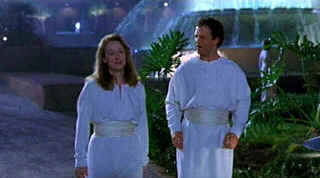

| Defending
Your Life/A,B- |
| Warner/1991/111/ANA 1.85 |
Defending Your Life is the Albert Brooks masterpiece. Taking the typical Brooks character on a tour of his life in the inspired
way station to Heaven setting works brilliantly. Not only is
Brooks terrific in the lead role as Daniel Miller, the script and direction are as crisp and
focused as anything Brooks has ever done.
 |
| A match made in Heaven. ©Warner |
Daniel Miller arrives in Judgment City,
the nether land between life and the final resting place in a sea of wheelchairs. Daniel is still
too numb to notice the wonderfully droll Disneyesque transportation system. The smiling service members guiding new arrivals
is distractingly wonderful. He walks through the hotel lobby in a daze and slumps down in his
room too exhausted to comprehend the permanence of his new state of being. In the morning, Daniel
must face up to his life in a unique examination of past events. Bob Diamond, the smarmy self
confident defender chosen for Daniel takes the new arrival by the arm, treats him to a lunch
experience and prepares him to face the music.
Bob Diamond may take Daniel's examination as a passing matter, but to
Daniel, it's the hot seat of truth. Lena Foster holds the coals to Daniels feet while Dick Stanley
subs for Diamond with merciless unconcern. Thank Heaven for Julia. Daniel meets Julia and sparks
fly.
How Brooks manages to spark a genuinely sweet romance in the midst of the snappy satire
is another remarkable achievement. Brooks strikes gold at almost every turn through Judgment
City. The Past Lives Pavilion is a hilariously bent hall of mirrors; the Japanese restaurant slices and
dices the laughs with glee; the Italian restaurant will make you think twice about taking a doggy
bag ever again; the discovery of Julia hotel accommodations is beyond terrific, and on and
on.
There’s genuine chemistry between Brooks and Meryl Streep,
playing an incandescent Julia. Oh my God, Rip Torn is hilarious as Bob Diamond, blithely defending
Brooks through every possible trick and turn delved up from his life by prosecutor Lena Foster,
played with grand cool by Lee Grant.
. It’s a mediocre transfer Warner, but it’s anamorphic. Not
quite sharp enough for my taste, slightly less exuberant colors. I remember it having more gloss in
its theatrical presentation, like my memory is that reliable. Maybe there is a conscious attempt to
soften the light in Judgment City. Shadow detail is adequate and the nights scenes generate a fair
amount of sparkle. Too bad this is not another Heavenly transfer. The Dolby Digital 2-channel mix
provides a good platform for the smart dialogue and lilting musical score.
|
|
|
|

The
Movie Poster Archive includes extensive poster images from the films of stars like Susan Hayward,
Kirk Douglas, Katharine Hepburn and many more. Our featured star is William Holden.


A film of extraordinary power that pulls no punches, The Grifters is not to be missed.
Hungry characters on the con, the short con, the long con, the self con.


Cyber Theater is an outstanding source for accurate video information. Check out their 16 x 9
format guide for a thorough understanding of DVD encoded that way.
 Lovers of Hong
Kong movies will relish MC4's
site that includes reviews and other information about the Hong Kong movie scene. Lovers of Hong
Kong movies will relish MC4's
site that includes reviews and other information about the Hong Kong movie scene.

DVD
Demystified makes it all clear. The official Internet DVD FAQ for the rec.video.dvd
Usenet newsgroups.

The official site for information about the great comic director. A treat for connoisseurs of
classic Hollywood madcap.
|